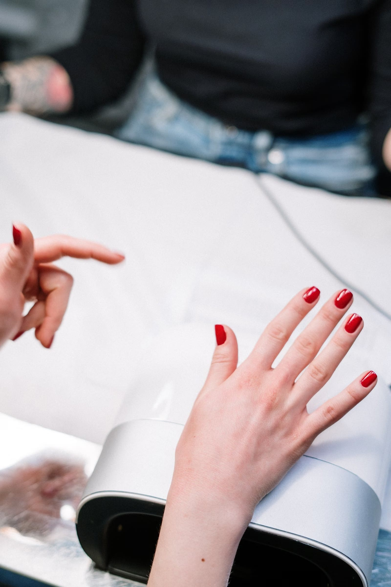
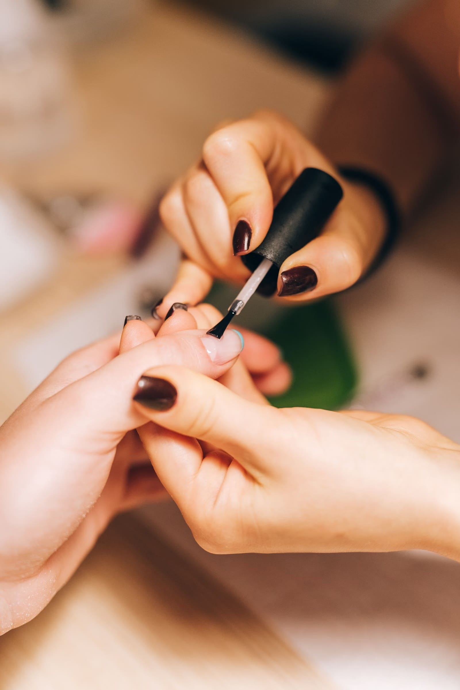

Protez tırnak, jel tırnak ve kalıcı ojede titiz ve hijyenik çalışma. Her müşteriden sonra sterilize edilen ekipmanlar.

Fiyat ve uygun saat için WhatsApp'tan yazmanız yeterli.

"İşini gerçekten özenle ve titizlikle yapıyor. Hem hijyen konusunda çok dikkatli hem de her seferinde tam istediğim gibi doğal ve şık tırnaklar ortaya çıkarıyor."
"En sevdiğim yanı ise işlemin kısa sürede bitmesi; hem hızlı hem de kalite asla düşmüyor."